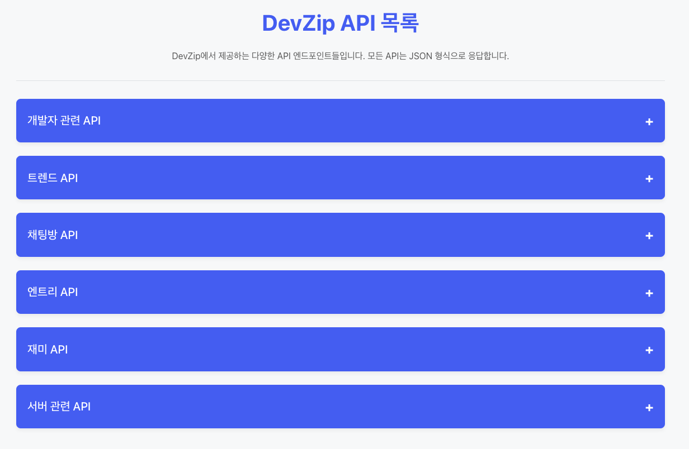
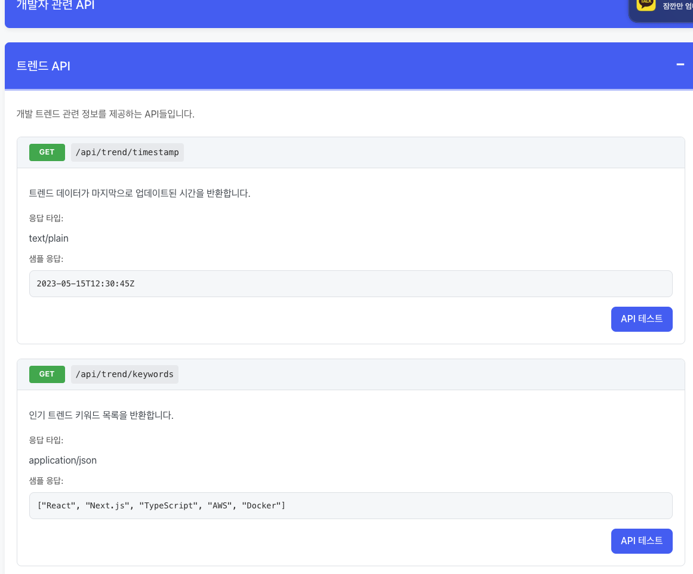

DevZip API 목록 페이지 개발기: 반응형 디자인과 접근성 개선
2025.04.17 (THU)
💡 TL;DR: DevZip API 목록 페이지는 제공하는 모든 API 엔드포인트를 한눈에 볼 수 있도록 설계했습니다. 반응형 디자인과 웹 접근성을 고려하여 개발했으며, 개발자에게 직관적인 사용자 경험을 제공합니다.
 
DevZip API 목록 페이지: 카테고리별로 정리된 API 엔드포인트를 확인할 수 있습니다.
프로젝트 배경
DevZip 프로젝트에서는 다양한 API를 제공하고 있었지만, 이를 한 곳에서 확인하고 테스트할 수 있는 공간이 없었습니다. 따라서 개발자와 사용자 모두가 쉽게 API를 이해하고 사용할 수 있는 직관적인 API 문서 페이지가 필요했습니다.
구현 목표
- 카테고리별 API 정리: 관련된 API들을 논리적인 카테고리로 분류
- 반응형 디자인: 모바일에서 데스크톱까지 모든 디바이스에서 최적의 사용자 경험 제공
- 접근성 준수: 키보드 사용자와 스크린 리더 사용자를 위한 접근성 확보
- 직관적인 UI: API 정보를 쉽게 이해할 수 있는 시각적 디자인
기술 스택
- React: 컴포넌트 기반 UI 구성
- CSS: 반응형 디자인 및 사용자 경험 최적화
- JavaScript: 인터랙티브 요소 구현
주요 구현 내용
1. API 데이터 구조화
API 정보를 효율적으로 관리하기 위해 데이터를 다음과 같이 구조화했습니다:
const apiCategories = [
{
name: '카테고리명',
description: '카테고리 설명',
endpoints: [
{
path: '/api/경로',
method: 'HTTP 메서드',
description: 'API 설명',
params: '파라미터 정보',
responseType: '응답 타입',
sampleResponse: '샘플 응답'
}
]
}
]
이러한 구조를 통해 API 정보를 체계적으로 관리하고, 새로운 API가 추가될 때 쉽게 업데이트할 수 있습니다.
2. 접근성을 고려한 아코디언 UI
사용자가 원하는 카테고리만 펼쳐볼 수 있도록 아코디언 UI를 구현했습니다. 이때 중요한 것은 접근성을 고려한 구현입니다.
<button
className="category-header"
onClick={() => toggleCategory(index)}
onKeyDown={(e) => handleKeyDown(e, index)}
aria-expanded={expandedCategory === index}
aria-controls={`category-content-${index}`}
>
<h2>{category.name}</h2>
<span className="expand-icon" aria-hidden="true">+</span>
</button>
button요소 사용: 키보드 탐색과 활성화가 자연스럽게 지원됩니다.aria-expanded: 현재 펼침 상태를 스크린 리더에 알려줍니다.aria-controls: 버튼이 제어하는 컨텐츠 섹션을 연결합니다.aria-hidden: 장식용 요소를 스크린 리더에서 숨깁니다.
3. 반응형 디자인 구현
모든 화면 크기에서 최적의 사용자 경험을 제공하기 위해 CSS 변수와 미디어 쿼리를 활용했습니다.
:root {
--primary-color: #4a6cf7;
--padding-sm: 10px;
--padding-md: 20px;
--padding-lg: 30px;
/* 기타 변수들 */
}
@media (max-width: 768px) {
.endpoint-header {
flex-direction: column;
align-items: flex-start;
}
/* 태블릿용 스타일 */
}
@media (max-width: 480px) {
:root {
--padding-sm: 8px;
--padding-md: 15px;
--padding-lg: 20px;
}
/* 모바일용 스타일 */
}
이렇게 하면 화면 크기에 따라 자동으로 스타일이 조정되어 모든 기기에서 최적의 레이아웃을 제공합니다.
4. HTTP 메서드별 시각적 구분
GET, POST, PUT, DELETE 등 HTTP 메서드에 따라 색상을 다르게 표시하여 사용자가 직관적으로 API 유형을 구분할 수 있도록 했습니다.
.method.get { background-color: var(--get-color); }
.method.post { background-color: var(--post-color); }
.method.put { background-color: var(--put-color); }
.method.delete { background-color: var(--delete-color); }
개발 과정에서 마주친 도전과 해결
접근성 문제
개발 과정에서 ESLint 접근성 규칙에 의해 다음과 같은 경고가 발생했습니다:
Visible, non-interactive elements with click handlers must have at least one keyboard listener
Avoid non-native interactive elements. If using native HTML is not possible, add an appropriate role
이 문제를 해결하기 위해:
<div>대신<button>요소 사용- 키보드 이벤트 핸들러 추가
- 적절한 ARIA 속성 추가
반응형 레이아웃 도전
작은 화면에서 API 정보가 잘 표시되도록 하는 것이 도전 과제였습니다. 특히 HTTP 메서드와 경로 정보가 긴 경우에 대응해야 했습니다. 미디어 쿼리를 통해 모바일 화면에서는 요소들이 세로로 배치되도록 조정하여 해결했습니다.
결과 및 배운 점
이번 API 목록 페이지 개발을 통해 단순히 기능만 구현하는 것이 아니라, 사용자 경험과 접근성을 함께 고려해야 한다는 점을 다시 한번 깨달았습니다. 특히 다음과 같은 부분에서 성장할 수 있었습니다:
- 접근성의 중요성: 모든 사용자가 콘텐츠에 접근할 수 있도록 하는 것은 선택이 아닌 필수입니다.
- 데이터 구조화의 중요성: 잘 설계된 데이터 구조는 UI 개발을 훨씬 수월하게 만들어 줍니다.
- CSS 변수의 활용: 테마와 반응형 디자인을 위한 CSS 변수 활용법을 익힐 수 있었습니다.
향후 개선 계획
- 검색 기능 추가: API를 빠르게 찾을 수 있는 검색 기능
- API 테스트 기능 강화: 실제로 API를 호출하고 결과를 바로 확인할 수 있는 기능
- 문서 버전 관리: API 변경 이력을 볼 수 있는 버전 관리 기능
이번 API 목록 페이지 개발은 사용자 친화적인 문서를 만드는 과정이었고, 좋은 문서가 얼마나 개발자 경험을 향상시킬 수 있는지를 다시 한번 체감했습니다. 앞으로도 계속 사용자 중심의 개발을 이어나가겠습니다.